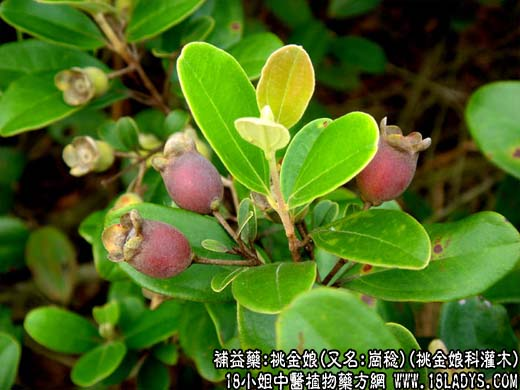

中草药名：桃金娘
别名：山菍
生长环境：本品为小灌木，生于荒山、山坡、阳光充足的地方，抗旱力强，土层浅箔的地方也能生长。
分布：我国的南部、广州附近各县。
入药部分：根、茎。
自采地点：山岗。 采集期：全年产。
性味：性平、味淡。
功能：安胎补肾、乌发、明目。
主治、用量和用发：①脚软痛。干用1两至2两，煲鸡脚食；②保产安胎。干用1至2两，煲鸡蛋服。③苦伤。服量同上，加瘦肉2两煎服。
验方：（治脚软无力酸痛方）岗菍根1两，豆豉姜1两，走马箭1两，千斤拔1两，清水五碗，煎成一碗服。
（方解）本方岗菍补气血、益肝肾，豆豉羌、走马箭、千斤拔怯风湿而壮筋强骨，用于肝肾两虚而致的痺症患者，有怯邪补正之效
（方歌）脚软山酸痛步履难，豆豉姜与岗菍根。千斤拔出走马箭，益肝强肾力更生。
附录：（子）治妇人血山崩：用于岗菍子1两，炒透，煎茶饮。
参考资料：《广东中医验方交流索编》治流鼻血及山崩，岗菍叶或岗菍子（适量），流鼻血用猪碧煎服。若血山崩，用猪小肚煮食。